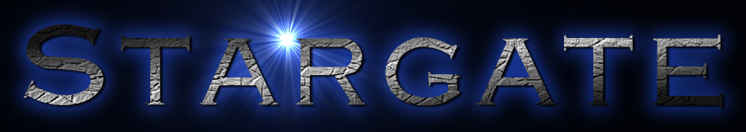
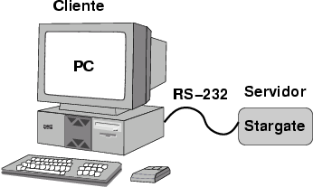
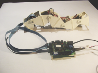
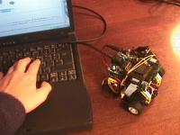
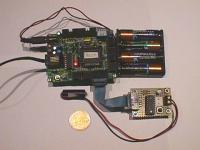
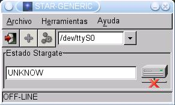

| PROYECTO STARGATE |
| [Introducción] | [Objetivos] | [Arquitectura] | [Ejemplos] | [Servidores] | [Clientes] | [Historia] | [Links] | [Noticias] |

La programación de ordenadores es muy interesante. Uno se puede pasar horas, disfrutando con la creación de estructuras, unióndolas como si fuesen piezas de Lego. A mí, además, siempre me ha atraído la idea poder utilizar el ordenador para controlar "el mundo exterior": mover robots, encender y apagar luces, controlar la maqueta del tren... así la informática cobra un nuevo sentido: los programas interactúan con el exterior, intercambiando información, modificando lo que nos rodea.
La llave para llegar a la "realidad exterior" es la electrónica y esto asusta mucho a los informáticos, cuando la realidad es que actualmente, con la llegada de los microcontroladores y las FPGAs "la electrónica se programa". He visto como muchos ingenieros informáticos hacían auténticas virguerías para conseguir sacar BITS al exterior a través del puerto paralelo, y con ellos controlar un dispositivo externo, como un robot. Es triste estar limitador por los pocos bits disponibles en él.
El proyecto StarGate surge como una puerta de Enlace entre el universo del software y el universo de los bits de la electrónica digital, permitiendo a los informáticos acceder al mundo exterior, de una manera sencilla, sin tener ampios conocimientos de electrónica. Otro objetivo fundamental es el de poder construir prototipos muy rápidamente para evaluar su viabilidad.
Un ejemplo puede ser el control de un robot articulado. Conseguir coordinar todas las articulaciones puede ser complicado. Para evaluar la viabilidad se puede desarrollar un prototipo controlado desde el ordenador, utilizando un Stargate.
La arquitectura se muestra a continuación. Se busca que sea lo más modular, sencilla y estándar posible. Por ello puede no ser la más eficiente.

El Stargate es un microcontrolador en el que se ejecuta un programa servidor, que ofrece diferentes servicios. El cliente se comunica con el Stargate.
Para hacerse una idea de lo que se puede realizar con esta arquitectura, lo mejor es ver ejemplos en los que se ha aplicado:
 |
 |
 |
| El robot ápodo Cube Reloaded, controlado con una Stargate | El microbot Tritt, manejado desde el PC a través de una Stargate | Grabando un PIC16F84 a través de una Stargate |
El software del PC desarrollado para estos ejemplos es independiente de la tecnología del Stargate, que pueden estar implementadas con microcontroladores diferentes, pero que ofrecen los mismos servicios.
Existen dos tipos de stargates: las convencionales y las de desarrollo. Las convencionales implementan los servicios básicos, comunes a todas ellas:
Además de los servicios básicos, cada Stargate implementa una serie de servicios específicos.
Las stargates de desarrollo no se ajustan a ninguna "norma", y se utilizan para hacer pruebas o desarrollar nuevas familias de Stargates. Un ejemplo es la Stargate de eco, que simplemente reenvía al PC todo lo que recibe. Muy útil para comprobar que los clientes envían y reciben información por el puerto serie.
El servidor es el programa que se ejecuta en el Stargate. Existen diferentes implementaciones, según los microcontroladores usados.
Los servidores que hay creados por el momento son:
Para cada Stargate el usuario puede implementarse diferentes Clientes. Resulta útil tener algunos clientes de ejemplo, para que luego puedan ser adaptados por el usuario.
La creación de clientes se realiza con la librería libstargate, con la que se tiene acceso a los servicios básicos (PING, IDENTIFICACION) de cualquier Stargate convencional y a LOAD y STORE del servidor genérico.
El star-generic es un cliente grífico para el Stargate genérico, aunque se puede usar para comprobar el funcionamiento de los servicios básicos de otros Stargates

Este proyecto surge como una generalización de la librería CTS y el servidor CTSERVER, utilizados para el control de la CT6811 desde el PC, desarrolladas en el 1997. ¿Por qué no extender estas ideas hacia una arquitectura más genérica, válida para cualquier otro microcontrolador y que se ofrezcan otros servicios? ¿Por qué no "estandarizar" el comportamiento para poder reutilizar código?